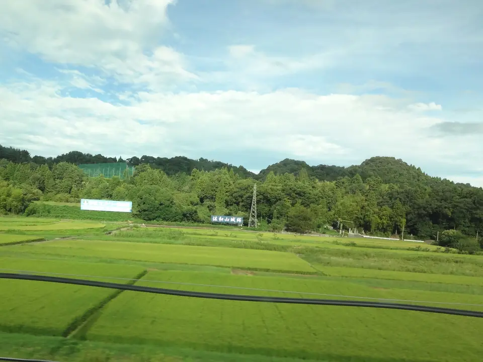

TOKAIDO SHINKANSEN WINDOW VIEW
田んぼ越しに山と看板——石田三成の佐和山城跡
石田三成の城跡を、田んぼ越しに。

- 見える区間
- 米原 → 京都
- 座席側
- E席・山側
- タイミング
- 東京発のぞみ基準で約115分後
- 写真
- 2 枚
佐和山城とは？なぜ城跡になっている？
佐和山城は、標高約232mの佐和山（滋賀県彦根市）に築かれた戦国期の山城です。中山道・北陸道・伊勢街道が交わる交通の要衝を押さえる位置にあり、六角氏、浅井氏、織田氏と時代ごとに支配者を変えながら重要視されました。豊臣秀吉の時代、五奉行のひとりとして政権を支えた石田三成が19万4千石の城主として入り、大規模な普請を行い、五層の天守と厳しい石垣を備えた城として整えたと伝わります。三成は非常に真面目な統治で知られ、居城の維持や下級家臣への待遇も含めて評価が高く、「三成に過ぎたるもの」と称される所以となりました。
もっと見る: 彦根観光ガイド: 佐和山城跡彦根市: 佐和山城跡と石田三成@letus10: 佐和山城跡と彦根城の車窓記事
東京から新大阪方面へ向かう場合は、米原 → 京都が近づいたらE席・山側の窓を少し早めに見てください。新大阪から東京方面へ向かう場合は、通過順が逆になります。
戦い、そして『廃城』——なにが残った？
1600年の関ヶ原の戦いで西軍が敗れると、佐和山城は東軍の攻撃を受けて陥落し、三成の父や兄など一族も命を落としました。戦後、井伊直政（徳川四天王のひとり）が旧三成領を与えられて入城しますが、まもなくの1603年、直政の跡を継いだ井伊直継（直勝）が近くの彦根山に新たな城を築くことを決定。1606年頃までに佐和山城は徹底的に取り壊され、石垣・建材の多くは彦根城の築城材として運ばれました。「三成の城の跡形も残さない」との意図が働いたとも言われ、現在は主郭跡の平坦地と、わずかな石垣、龍潭寺（りょうたんじ）などの寺社が城の痕跡を伝えるのみとなっています。
彦根市の観光ページでも「石田三成の居城として名高く、関ヶ原の戦い後に廃城となった」と紹介されており、山そのものが史跡として扱われています。麓の龍潭寺は井伊家ゆかりの寺で、境内に佐和山城主・石田三成の像もあり、静かに歴史を偲ぶ場所になっています。
新幹線からは、山頂の石垣や建物は当然見えません。代わりに、車窓のE席側に見える「独立した緑濃い山」と、その麓の田園に立つ大きな『佐和山城跡』の看板が目印です。看板を見つけた瞬間、この山の上で何が起きたかを思い出す——そういう楽しみ方が向いている車窓です。
位置の目安
地図をひらくスポット位置と、新幹線から見る位置を切り替えられます。
佐和山城跡を見逃さないコツ
1. 先に見る方向を決める
米原 → 京都が近づいたら、E席・山側の窓を先に意識してください。現在地から追う場合はライブガイド、事前に確認する場合はこのページの地図が役立ちます。
はっきり見えるのは数秒ほど。案内が出てからカメラを探すより、先に座席側と窓の方向を決めておくと拾いやすくなります。
2. 見どころ
米原を通過して数分、E席側の平野に「独立して盛り上がる、まとまった緑の山」を探してください。麓の田園にある大きな看板がタイミングの合図です。天守を探すのではなく、この山の上でかつて何が決まったか、を思いながら眺めるとぐっと印象が変わります。
写真で見る佐和山城跡

 関連
観音寺城跡
関連
観音寺城跡
 関連
金生山
関連
金生山
 関連
ソーラーアーク
関連
ソーラーアーク